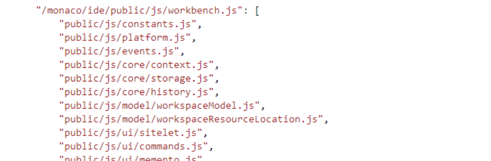

Building a large scale JavaScript application in TypeScript
Johannes Rieken
jrieken@microsoft.com

Focus on code


Visual Studio Code
Large JavaScript application
Electron
90% browser code
10% io.js code
The Road to VSCode
| 50 kLOC | 100 kLOC | 500 kLOC |
|---|---|---|
| Modules Classes Interfaces Promises |
AMD Lazy Loading Contributions |
Components Dependency Injection |
| 10% TypeScript | 50% TypeScript | 100% TypeScript |
today Autumn 2011
We enjoy programming in JavaScript™
Pains
Large code bases need to come up with
Refactoring JavaScript code is
"Javascript code rots over time."
— Frustrated Developer
Describing APIs means keeping documentation
TypeScript to the rescue
All JavaScript code is TypeScript.
JavaScript libraries work with TypeScript.
function Greeter(greeting) {
this.greeting = greeting;
}
Greeter.prototype.greet = function() {
return "Hello, " + this.greeting;
};
TypeScript to the rescue
Structural typing, type inference.
var person = {
cyclist: 'Johannes',
bikes: [
'Santa Cruz Nomad CC',
'Intense Carbine 29',
'Liteville 301'
]
};
// error
var rider = person.rider;
// bikes is of type array of strings
var bikes = person.bikes;
TypeScript to the rescue
Compiles to
Runs
// DOM access
var button = document.createElement('button');
button.textContent = "Say Hello";
button.onclick = () => alert('Hello!');
// Node.JS Express server
var express = require('express');
var app = express();
app.get('/', (req, res) => res.send('Hello!'));
app.listen(3000);
Demo
The Road to VSCode
| 50 kLOC | 100 kLOC | 500 kLOC |
|---|---|---|
| Modules Classes Interfaces Promises |
AMD Lazy Loading Contributions |
Components Dependency Injection |
| 10% TypeScript | 50% TypeScript | 100% TypeScript |
today Autumn 2011
Code Organization
var Monaco = {};
Monaco.Util.Strings = {};
Monaco.Util.Strings = {};
Monaco.Util.Strings.trim = function () { /* etc */ };
No relationship to the
Renaming files, refactoring was a huge pain.
Dependency Management
"… our dependency graph was such a mess that each area had a dependency on just about every other area."— Embarrassed Developer

Script Order
Eager Script Loading
AMD
Asynchronous Module Definition
define('module_id', ['dependency_id'], function(dependency) {
// code
return {
// exports
};
});
Popularized by RequireJS.
TypeScript External Modules
TypeScript supports
import dependency = require('dependency_id');
export function foo() {
// code
}
While
Demo
Post AMD
"It feels like a fresh shower. Self contained modules, no more cycles, no more globals, clean file system structure."— Happy Developer
CSS Dependencies
Managing
Virtual every CSS file is related to some AMD module.
We implemented an
TypeScript supports this via a pragma comment.
/// <amd-dependency path="vs/css!./hover" />
define(['vs/css!./hover', ... ], function (...) { ... });
Lazy Loading
AMD allows us to
// vs/languages/csharp.contribution
modesExtensions.registerMode(
'vs.languages.csharp', // mode name
['text/x-csharp'], // mimetypes
'vs/languages/csharp' // mode implementation
'CSMode' // mode class
);
// vs/languages/csharp
export class CSMode {
// heavy stuff here
}
Bundles
AMD allows us to
We can
The Road to VSCode
| 50 kLOC | 100 kLOC | 500 kLOC |
|---|---|---|
| Modules Classes Interfaces Promises |
AMD Lazy Loading Contributions |
Components Dependency Injection |
| 10% TypeScript | 50% TypeScript | 100% TypeScript |
today Autumn 2011
Towards 100% TypeScript
Migration out of developer will.
It's mainly
We established any types or no missing return statements.
Hindsight Quotes
"In JavaScript, you really are at the mercy of your ability to spell."
delete this.markers[range.statMarkerId];
// or is it startMarkerId?
"Soon enough, I realized how inconsistent I was. The same data was flowing around in at least 3 different formats!"— Enlightened Developer
Components
We .d.ts file.
.d.ts
/**
* A selection in the editor
*/
export interface IEditorSelection extends ISelection {
/**
* Test if equals other selection
*/
equalsSelection(other: ISelection): boolean;
// ...
}
Services, Dependency Injection
We came up with our own services and dependency injection framework to help with
export interface IMarkerService {
change(owner: string, resource: URI, markers: IMarker[]): void;
}
class MarkerNavigationAction {
constructor(ctx: Services.IPlatformServices) {
this.markerService = ctx.markerService;
}
}
TypeScript Retrospective
We were always on the bleeding edge...
... but would always do it again.
The
- confidence
- refactoring agility
- tooling
Starting a New Project?
- Start with TypeScript.
- Use external modules.
Thanks!
http://www.typescriptlang.org/
https://github.com/jrieken/large-scale-typescript
image sources: http://giphy.com/gifs/party-infomercial-snuggie-TyPKuTkBXmBPO, http://giphy.com/gifs/party-vintage-V0BIjUQRfl8tO, http://giphy.com/gifs/transparent-loop-7JGIvN87NavFS